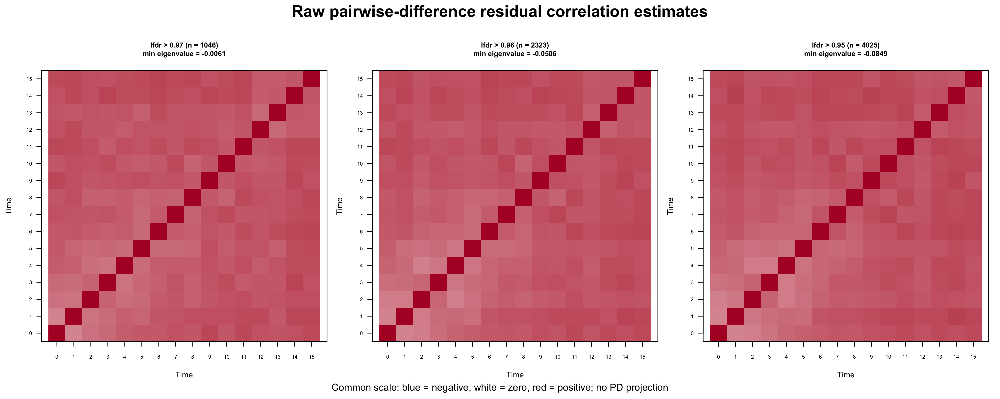
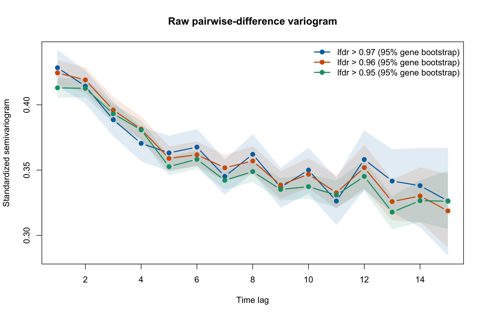
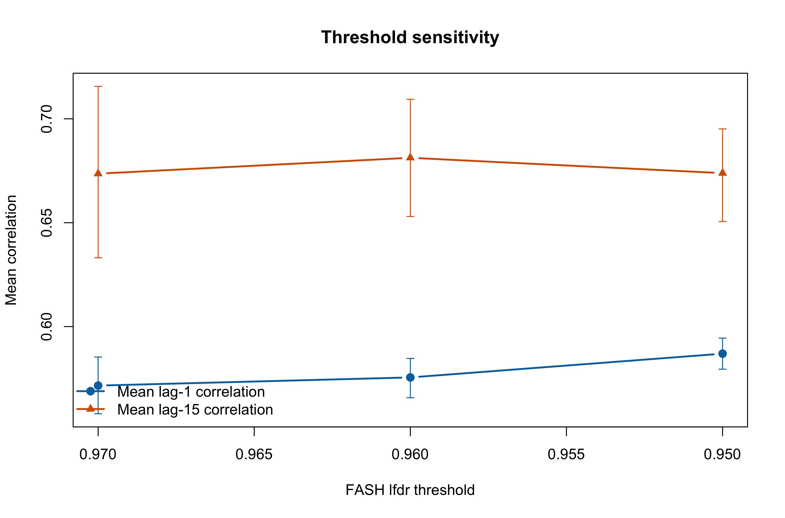
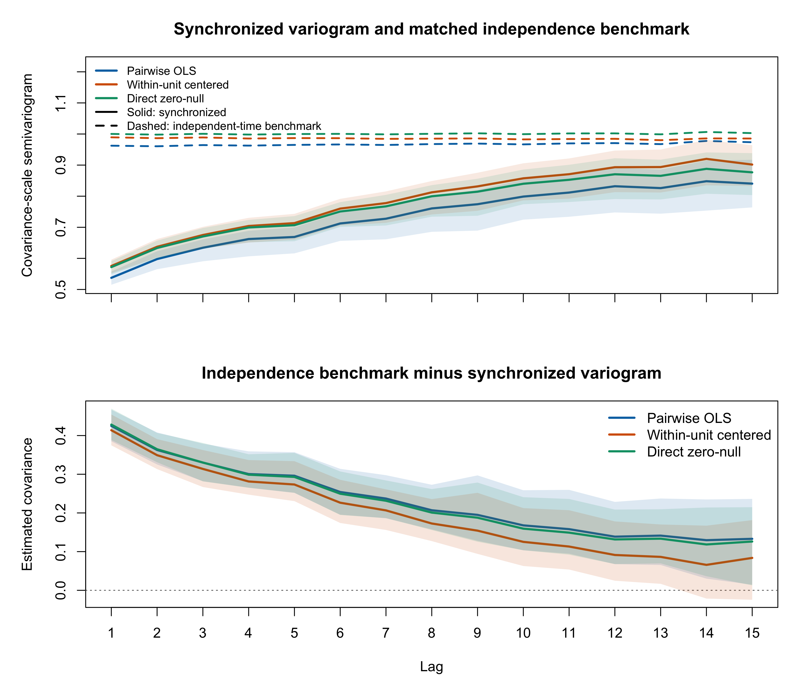
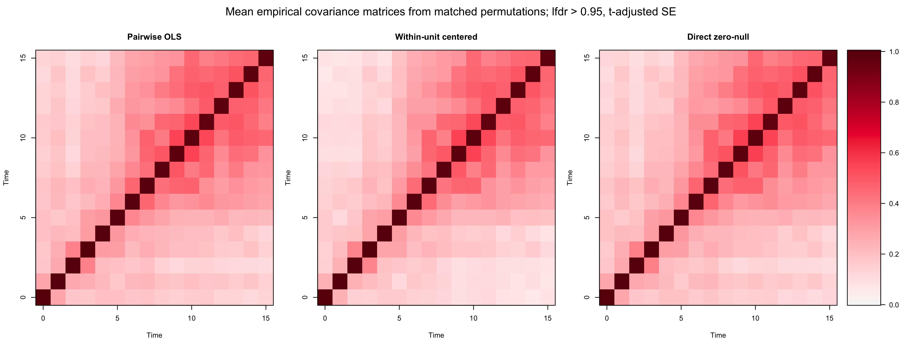
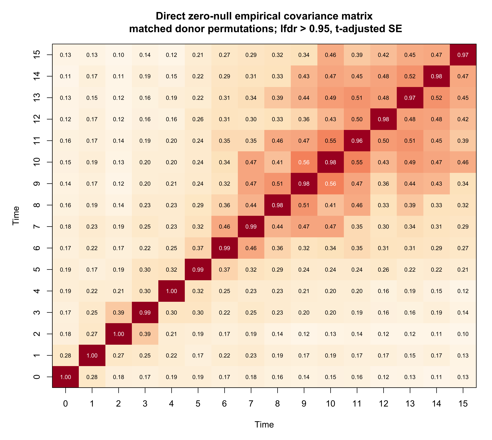

Last updated: 2026-08-06
Checks: 6 1
Knit directory: coderepo-local/
This reproducible R Markdown analysis was created with workflowr (version 1.7.2). The Checks tab describes the reproducibility checks that were applied when the results were created. The Past versions tab lists the development history.
The R Markdown is untracked by Git. To know which version of the R
Markdown file created these results, you’ll want to first commit it to
the Git repo. If you’re still working on the analysis, you can ignore
this warning. When you’re finished, you can run
wflow_publish to commit the R Markdown file and build the
HTML.
Great job! The global environment was empty. Objects defined in the global environment can affect the analysis in your R Markdown file in unknown ways. For reproduciblity it’s best to always run the code in an empty environment.
The command set.seed(20251109) was run prior to running
the code in the R Markdown file. Setting a seed ensures that any results
that rely on randomness, e.g. subsampling or permutations, are
reproducible.
Great job! Recording the operating system, R version, and package versions is critical for reproducibility.
Nice! There were no cached chunks for this analysis, so you can be confident that you successfully produced the results during this run.
Great job! Using relative paths to the files within your workflowr project makes it easier to run your code on other machines.
Great! You are using Git for version control. Tracking code development and connecting the code version to the results is critical for reproducibility.
The results in this page were generated with repository version 9fbd863. See the Past versions tab to see a history of the changes made to the R Markdown and HTML files.
Note that you need to be careful to ensure that all relevant files for
the analysis have been committed to Git prior to generating the results
(you can use wflow_publish or
wflow_git_commit). workflowr only checks the R Markdown
file, but you know if there are other scripts or data files that it
depends on. Below is the status of the Git repository when the results
were generated:
Ignored files:
Ignored: .DS_Store
Ignored: .Rhistory
Ignored: .Rproj.user/
Ignored: analysis/.DS_Store
Ignored: analysis/.Rhistory
Ignored: analysis/site_libs/
Ignored: code/.DS_Store
Ignored: code/.Rhistory
Ignored: data/appendixB/
Ignored: data/dynamic_eQTL_real/
Ignored: data/toy_example/
Ignored: output/dynamic_eQTL_real/
Ignored: output/pdf/
Ignored: output/revision_simulations/
Untracked files:
Untracked: Rplots.pdf
Untracked: analysis/revision_combined_spiky_genotype_simulation.rmd
Untracked: analysis/revision_correlated_error_simulation.rmd
Untracked: analysis/revision_functional_testing_simulation.rmd
Untracked: analysis/revision_genotype_level_simulation.rmd
Untracked: analysis/revision_internal_one_variant_per_gene_refit.rmd
Untracked: analysis/revision_internal_real_genotype_simulation.rmd
Untracked: analysis/revision_internal_targeted_broad_calibration.rmd
Untracked: analysis/revision_internal_zero_intercept_correlation.rmd
Untracked: analysis/revision_ld_tagging_switch_example.rmd
Untracked: code/00_eQTLs_CL.R
Untracked: code/01_fash_CL.R
Untracked: code/01_fash_CL.sbatch
Untracked: code/09_penalty_sensitivity.R
Untracked: code/09_penalty_sensitivity.sbatch
Untracked: code/revision_simulations/
Untracked: fash_prior_comparison_order1_after.pdf
Untracked: fash_prior_comparison_order1_after.png
Untracked: fash_prior_comparison_order1_before.pdf
Untracked: fash_prior_comparison_order1_before.png
Untracked: fash_prior_comparison_order2_after.pdf
Untracked: fash_prior_comparison_order2_after.png
Untracked: fash_prior_comparison_order2_before.pdf
Untracked: fash_prior_comparison_order2_before.png
Unstaged changes:
Modified: .gitignore
Modified: analysis/dynamic_eQTL_real.rmd
Modified: analysis/index.Rmd
Modified: analysis/nonlinear_dynamic_eQTL_real.Rmd
Modified: code/README.md
Modified: output/toy_example/toy_example_11.pdf
Modified: output/toy_example/toy_example_12.pdf
Modified: output/toy_example/toy_example_21.pdf
Modified: output/toy_example/toy_example_22.pdf
Note that any generated files, e.g. HTML, png, CSS, etc., are not included in this status report because it is ok for generated content to have uncommitted changes.
There are no past versions. Publish this analysis with
wflow_publish() to start tracking its development.
This is an internal exploratory analysis. It is not linked from the reviewer-facing R4 page, the manuscript, or the response letter. The existing R4 page and its simulation caches are unchanged.
The previous empirical-covariance experiment showed why near-zero z scores are not sufficient to identify measurement-error correlation: many selected trajectories have a persistent nonzero genetic effect. Here we focus on a different estimator that cancels an unknown constant effect algebraically, without estimating or subtracting a separate intercept for each unit.
The final section adds a stronger donor-permutation experiment. It uses a matched independent-time permutation as the variogram reference, allowing the lag covariance and a full empirical covariance matrix to be estimated without interpreting centering-induced negative correlation as residual dependence.
The target is the common residual correlation matrix \(C\) in
\[ \widehat\beta_j \mid \beta_j \sim N\!\left(\beta_j, D_j C D_j\right), \qquad D_j=\operatorname{diag}(s_{j1},\ldots,s_{j16}). \]
Because the standardized residuals have unit marginal variances, \(C\) is both their covariance and correlation matrix. The beta-hat-scale covariance \(D_j C D_j\) differs across units because their standard errors differ.
Under the FASH dynamic null, unit \(j\) has an unknown constant effect,
\[ \beta_j(t)=\mu_j. \]
For time points \(t\) and \(s\), define
\[ A_{j,ts}=s_{jt}^2+s_{js}^2, \qquad x_{j,ts}=\frac{2s_{jt}s_{js}}{A_{j,ts}}, \qquad q_{j,ts}=\frac{ \{\widehat\beta_j(t)-\widehat\beta_j(s)\}^2 }{A_{j,ts}}. \]
If the selected unit is a true FASH null, the unknown \(\mu_j\) cancels and
\[ E\!\left(1-q_{j,ts}\mid s_{jt},s_{js}\right) =x_{j,ts}C_{ts}. \]
We therefore estimate each off-diagonal entry by OLS through the origin,
\[ \widehat C_{ts} = \frac{\sum_j x_{j,ts}(1-q_{j,ts})} {\sum_j x_{j,ts}^2}, \qquad \widehat C_{tt}=1. \]
variance_sum <- se[, time_t]^2 + se[, time_s]^2
x <- 2 * se[, time_t] * se[, time_s] / variance_sum
q <- (beta_hat[, time_t] - beta_hat[, time_s])^2 / variance_sum
raw_correlation[time_t, time_s] <- sum(x * (1 - q)) / sum(x^2)
raw_correlation[time_s, time_t] <- raw_correlation[time_t, time_s]
diag(raw_correlation) <- 1No unit-specific intercept is estimated, no trajectory is centered, and no positive-definite projection is applied. If a selected unit is dynamically non-null, its squared true difference enters \(q_{j,ts}\) and moves the estimate downward. Thus the estimator equals residual correlation in expectation for an externally fixed set of true constant-effect nulls, but is a lower estimate when dynamic alternatives contaminate that fixed set.
There is a separate selection issue: the fitted lfdr is computed from the same 16 observations. Requiring a high observed lfdr can favor trajectories that look unusually flat because of their realized noise. Therefore, high lfdr is an approximate null selector, not an oracle label; the analysis below examines whether the estimate is sensitive to the chosen lfdr cutoff.
Within each gene, we first retain the variant with the highest BF-adjusted FASH lfdr, using the pair key to break exact ties. We then use all gene representatives satisfying the strict rules
\[ \operatorname{lfdr}>0.97, \qquad \operatorname{lfdr}>0.96, \qquad \operatorname{lfdr}>0.95. \]
The three sets are nested and contain 1,046, 2,323, 4,025 distinct genes, respectively, out of 6,362 one-per-gene representatives.
render_scrollable_table(
threshold_summary_table,
align = "lrlrrrrrr",
minimum_width = "1550px"
)| lfdr rule | Selected genes | Selected lfdr range | Mean lag-1 correlation (95% CI) | Mean lag-15 correlation (95% CI) | Mean off-diagonal correlation | Off-diagonal range | Minimum eigenvalue | Negative eigenvalues |
|---|---|---|---|---|---|---|---|---|
| lfdr > 0.97 | 1046 | [0.9700, 0.9997] | 0.572 [0.558, 0.585] | 0.674 [0.633, 0.716] | 0.625 | [0.445, 0.704] | -0.0061 | 1 |
| lfdr > 0.96 | 2323 | [0.9600, 0.9997] | 0.576 [0.566, 0.585] | 0.681 [0.653, 0.709] | 0.625 | [0.444, 0.706] | -0.0506 | 1 |
| lfdr > 0.95 | 4025 | [0.9500, 0.9997] | 0.587 [0.579, 0.594] | 0.674 [0.651, 0.695] | 0.631 | [0.445, 0.727] | -0.0849 | 1 |
plot_pairwise_raw_matrices()
All three matrices show a broad positive common mode rather than dependence concentrated near the first off-diagonal. Mean off-diagonal correlation ranges only from 0.625 to 0.631 as the selected set grows from 1,046 to 4,025 genes.
The raw matrices have one negative eigenvalue each, with minimum eigenvalues -0.0061, -0.0506, -0.0849. This is allowed in the present descriptive analysis: these are the unmodified pairwise moment estimates requested here. They cannot be used directly as Gaussian simulation covariance matrices without a later regularization or projection step.
For lag \(h\), the plotted standardized semivariogram is
\[ \widehat\gamma(h) =\frac{1}{|\mathcal P_h|} \sum_{(t,s)\in\mathcal P_h}\{1-\widehat C_{ts}\}, \qquad \mathcal P_h=\{(t,s):|t-s|=h\}. \]
The bands are percentile 95% intervals from 1,000 gene-bootstrap replications, performed separately within each threshold-selected set.
plot_pairwise_variograms()
The variogram does not increase with lag. Instead, mean correlation rises from 0.572–0.587 at lag 1 to 0.674–0.681 at lag 15, so the semivariogram declines. This is not the usual signature of a short-range temporal error process. It is more consistent with a broad common mode, time-specific heterogeneity, or ascertainment for flat trajectories than with a lag-1-only dependence pattern.
The bootstrap bands quantify gene-sampling uncertainty conditional on the selection rule. They do not quantify bias from using the observed lfdr to select the same trajectories.
plot_pairwise_threshold_sensitivity()
The lag-1 estimates change by only 0.015 across the three thresholds; the mean off-diagonal estimates change by only 0.006. Comparing the two endpoint matrices, the mean absolute off-diagonal difference is 0.021 and the maximum entrywise difference is 0.061.
render_scrollable_table(
matrix_difference_table,
align = "lrrr",
minimum_width = "920px",
digits = 4
)| Comparison | Maximum absolute entry difference | Mean absolute off-diagonal difference | Frobenius difference |
|---|---|---|---|
| lfdr > 0.97 vs > 0.96 | 0.0616 | 0.0158 | 0.3088 |
| lfdr > 0.97 vs > 0.95 | 0.0606 | 0.0214 | 0.4097 |
| lfdr > 0.96 vs > 0.95 | 0.0274 | 0.0098 | 0.1839 |
Thus the empirical magnitude and broad matrix pattern are not materially sensitive to choosing 0.95, 0.96, or 0.97. This stability is useful, but it does not by itself distinguish genuine residual common-mode correlation from selection-induced flatness because all three sets are defined by the same trajectory-based lfdr.
This experiment supports three conclusions.
For this observed-data selection experiment alone, the strongest defensible summary is:
Among one-per-gene trajectories with BF-adjusted FASH lfdr above 0.95–0.97, the unprojected pairwise-difference estimator yields a strong positive common mode that is stable to the lfdr cutoff. If these selected trajectories were an externally fixed set of true constant-effect nulls, this would estimate residual correlation directly. Because the same trajectories are selected using their observed lfdr, residual selection bias remains unresolved.
The observed-data analysis cannot separate residual covariance from selection for flat trajectories. We therefore fix the selected gene–variant pairs before generating a genotype-null dataset and compare two residual-block randomizations:
Both designs use the original genotypes, the time-specific PC1–PC5
designs, the fixed one-variant-per-gene selections, and 100
deterministic permutations. The primary analysis uses the 4,025 units
with strict BF-adjusted FASH lfdr > 0.95 and the
t-adjusted SE used by FASH.
For estimator \(m\), let \(\widehat\gamma^{\mathrm{sync}}_{m,ts}\) and \(\widehat\gamma^{\mathrm{ind}}_{m,ts}\) be the covariance-scale semivariograms under the synchronized and independent-time designs. The matched covariance estimate is
\[ \widehat K^{(m)}_{ts} = \widehat\gamma^{\mathrm{ind}}_{m,ts} - \widehat\gamma^{\mathrm{sync}}_{m,ts}. \]
The independent-time direct zero-null covariance has mean off-diagonal 0.0003 and range [-0.0169, 0.0149], confirming that it is an effective zero-cross-time-covariance reference. For the full matrices, the diagonal is supplied by the synchronized direct zero-null marginal variances because every variogram has a zero diagonal.
plot_permuted_variogram_covariance()
The synchronized variograms increase toward their method-matched independence benchmarks. Subtracting them from those benchmarks shows positive covariance that decreases with lag rather than covariance that increases with lag.
render_scrollable_table(
permuted_primary_lag_table,
align = "llll",
minimum_width = "1150px"
)| Estimator | Lag 1 covariance (95% interval) | Lag 9 covariance (95% interval) | Lag 15 covariance (95% interval) |
|---|---|---|---|
| Pairwise OLS | 0.425 [0.385, 0.467] | 0.195 [0.128, 0.297] | 0.133 [0.014, 0.236] |
| Within-unit centered | 0.414 [0.375, 0.455] | 0.154 [0.094, 0.252] | 0.084 [-0.024, 0.181] |
| Direct zero-null | 0.428 [0.389, 0.470] | 0.188 [0.126, 0.279] | 0.126 [0.013, 0.215] |
The pairwise OLS and direct zero-null estimates agree numerically. Across all 120 off-diagonal entries, their matrix correlation is 0.9998 and their RMSE is 0.0057. Their mean covariance difference is only 0.0029.
The within-unit centered estimate agrees closely in shape, with matrix correlation 0.9950, but is not numerically identical: its off-diagonal RMSE is 0.0291 and its mean covariance is lower by 0.0235. The gap grows to about 0.04 at the longest lag. This residual discrepancy is expected because the implemented centering removes an inverse-variance weighted constant on the beta-hat scale and then divides by unequal SEs; centering is therefore not exactly invariant on the final standardized scale.
render_scrollable_table(
permuted_method_agreement_table,
align = "lrrrr",
minimum_width = "1150px",
digits = 4
)| Estimator | Off-diagonal matrix correlation with direct | Off-diagonal RMSE | Mean covariance difference | Maximum absolute difference |
|---|---|---|---|---|
| Pairwise OLS | 0.9998 | 0.0057 | 0.0029 | 0.0131 |
| Within-unit centered | 0.9950 | 0.0291 | -0.0235 | 0.0767 |
Thus all three estimators support the same qualitative lag pattern and a non-negligible positive covariance. Pairwise OLS and direct zero-null provide the strongest quantitative agreement; the centered estimator is a mildly conservative diagnostic, especially at long lags.
plot_permuted_covariance_matrices()
render_scrollable_table(
permuted_matrix_diagnostics_table,
align = "lrrrrrrr",
minimum_width = "1450px",
digits = 4
)| Estimator | Mean diagonal | Mean off-diagonal | Off-diagonal minimum | Off-diagonal maximum | Minimum eigenvalue | Leading eigenvalue fraction |
|---|---|---|---|---|---|---|
| Pairwise OLS | 0.9852 | 0.2789 | 0.1073 | 0.5509 | 0.3428 | 0.3415 |
| Within-unit centered | 0.9852 | 0.2525 | 0.0615 | 0.5543 | 0.3414 | 0.3227 |
| Direct zero-null | 0.9852 | 0.2760 | 0.1019 | 0.5595 | 0.3335 | 0.3398 |
The covariance is not negligible on the standardized beta-hat scale. For the primary direct zero-null estimate, the mean diagonal is 0.985, the mean off-diagonal covariance is 0.276, and the off-diagonal entries range from 0.102 to 0.560. The mean matrix is positive definite, with minimum eigenvalue 0.334, and its leading eigenvalue explains 34.0% of the total variance.
plot_permuted_direct_covariance_matrix()
The matrix is not well described by a stationary AR(1) model. It has a clear near-diagonal component, but neighboring late-time estimates are often around 0.45–0.56, whereas many early-versus-late entries are around 0.10–0.20. There is therefore both persistent positive covariance and substantial time-specific heterogeneity.
The numeric matrix is retained below for exact inspection.
render_scrollable_table(
permuted_primary_matrix_table,
align = paste0("l", paste(rep("r", 16), collapse = "")),
minimum_width = "1900px",
digits = 3
)| Time | Time 0 | Time 1 | Time 2 | Time 3 | Time 4 | Time 5 | Time 6 | Time 7 | Time 8 | Time 9 | Time 10 | Time 11 | Time 12 | Time 13 | Time 14 | Time 15 |
|---|---|---|---|---|---|---|---|---|---|---|---|---|---|---|---|---|
| 0 | 0.996 | 0.279 | 0.176 | 0.169 | 0.194 | 0.193 | 0.168 | 0.183 | 0.157 | 0.140 | 0.152 | 0.156 | 0.125 | 0.128 | 0.106 | 0.126 |
| 1 | 0.279 | 0.999 | 0.270 | 0.250 | 0.216 | 0.168 | 0.217 | 0.227 | 0.187 | 0.174 | 0.190 | 0.169 | 0.170 | 0.154 | 0.171 | 0.131 |
| 2 | 0.176 | 0.270 | 1.003 | 0.393 | 0.212 | 0.193 | 0.172 | 0.193 | 0.137 | 0.116 | 0.132 | 0.138 | 0.118 | 0.117 | 0.110 | 0.102 |
| 3 | 0.169 | 0.250 | 0.393 | 0.994 | 0.304 | 0.299 | 0.218 | 0.255 | 0.226 | 0.204 | 0.203 | 0.186 | 0.162 | 0.156 | 0.186 | 0.137 |
| 4 | 0.194 | 0.216 | 0.212 | 0.304 | 1.001 | 0.323 | 0.254 | 0.233 | 0.227 | 0.213 | 0.200 | 0.199 | 0.157 | 0.193 | 0.150 | 0.115 |
| 5 | 0.193 | 0.168 | 0.193 | 0.299 | 0.323 | 0.988 | 0.368 | 0.324 | 0.286 | 0.245 | 0.241 | 0.240 | 0.255 | 0.219 | 0.220 | 0.211 |
| 6 | 0.168 | 0.217 | 0.172 | 0.218 | 0.254 | 0.368 | 0.990 | 0.464 | 0.365 | 0.318 | 0.336 | 0.353 | 0.313 | 0.309 | 0.290 | 0.272 |
| 7 | 0.183 | 0.227 | 0.193 | 0.255 | 0.233 | 0.324 | 0.464 | 0.993 | 0.441 | 0.469 | 0.473 | 0.350 | 0.304 | 0.342 | 0.311 | 0.292 |
| 8 | 0.157 | 0.187 | 0.137 | 0.226 | 0.227 | 0.286 | 0.365 | 0.441 | 0.980 | 0.510 | 0.411 | 0.464 | 0.333 | 0.394 | 0.328 | 0.320 |
| 9 | 0.140 | 0.174 | 0.116 | 0.204 | 0.213 | 0.245 | 0.318 | 0.469 | 0.510 | 0.976 | 0.560 | 0.471 | 0.363 | 0.443 | 0.431 | 0.337 |
| 10 | 0.152 | 0.190 | 0.132 | 0.203 | 0.200 | 0.241 | 0.336 | 0.473 | 0.411 | 0.560 | 0.978 | 0.549 | 0.430 | 0.489 | 0.472 | 0.458 |
| 11 | 0.156 | 0.169 | 0.138 | 0.186 | 0.199 | 0.240 | 0.353 | 0.350 | 0.464 | 0.471 | 0.549 | 0.964 | 0.499 | 0.513 | 0.454 | 0.392 |
| 12 | 0.125 | 0.170 | 0.118 | 0.162 | 0.157 | 0.255 | 0.313 | 0.304 | 0.333 | 0.363 | 0.430 | 0.499 | 0.978 | 0.484 | 0.476 | 0.416 |
| 13 | 0.128 | 0.154 | 0.117 | 0.156 | 0.193 | 0.219 | 0.309 | 0.342 | 0.394 | 0.443 | 0.489 | 0.513 | 0.484 | 0.973 | 0.515 | 0.455 |
| 14 | 0.106 | 0.171 | 0.110 | 0.186 | 0.150 | 0.220 | 0.290 | 0.311 | 0.328 | 0.431 | 0.472 | 0.454 | 0.476 | 0.515 | 0.978 | 0.467 |
| 15 | 0.126 | 0.131 | 0.102 | 0.137 | 0.115 | 0.211 | 0.272 | 0.292 | 0.320 | 0.337 | 0.458 | 0.392 | 0.416 | 0.455 | 0.467 | 0.972 |
render_scrollable_table(
permuted_threshold_sensitivity_table,
align = "lrrrr",
minimum_width = "980px",
digits = 3
)| Strict lfdr rule | Units | Lag 1 covariance | Lag 9 covariance | Lag 15 covariance |
|---|---|---|---|---|
| lfdr > 0.97 | 1046 | 0.400 | 0.185 | 0.116 |
| lfdr > 0.96 | 2323 | 0.413 | 0.185 | 0.122 |
| lfdr > 0.95 | 4025 | 0.428 | 0.188 | 0.126 |
The direct zero-null covariance profile is stable across the three fixed selection thresholds. At lag 1 it ranges from approximately 0.40 to 0.43; lag-9 and lag-15 estimates are essentially unchanged while their intervals widen as the selected set becomes smaller.
The strongest internal conclusion from the permutation experiment is:
After method-matched independence calibration, pairwise OLS and direct zero-null estimation recover nearly identical empirical covariance matrices. Within-unit centering recovers the same shape with a modest downward long-lag bias caused by unequal SEs. The residual covariance is not negligible: it averages about 0.28 off diagonal, is about 0.43 at lag 1, and remains about 0.13 at lag 15. Its nonstationary 16-time structure is richer than a lag-1-only model.
Routine builds read the completed cache at
output/revision_simulations/internal/pairwise_lfdr_threshold_correlation/
and do not reload the 554-MB FASH object or rerun the gene
bootstraps.
Rscript --vanilla \
code/revision_simulations/internal/covariance_estimation/run_pairwise_lfdr_threshold_exploration.R \
--lfdr-thresholds 0.97,0.96,0.95 \
--bootstrap-reps 1000 \
--bootstrap-seed-start 20260821 \
--output-id pairwise_lfdr_threshold_correlationThe focused helper tests can be rerun with:
Rscript --vanilla \
code/revision_simulations/internal/covariance_estimation/test_pairwise_lfdr_threshold_helpers.RThe underlying pairwise estimator test can be rerun with:
Rscript --vanilla \
code/revision_simulations/r4_correlated_errors/test_real_data_correlation_estimators.RThe matched donor-permutation variogram and covariance summary can be regenerated with:
Rscript --vanilla \
code/revision_simulations/internal/covariance_estimation/summarize_permuted_variogram_covariance.R
sessionInfo()R version 4.5.1 (2025-06-13)
Platform: aarch64-apple-darwin20
Running under: macOS Sequoia 15.6.1
Matrix products: default
BLAS: /System/Library/Frameworks/Accelerate.framework/Versions/A/Frameworks/vecLib.framework/Versions/A/libBLAS.dylib
LAPACK: /Library/Frameworks/R.framework/Versions/4.5-arm64/Resources/lib/libRlapack.dylib; LAPACK version 3.12.1
locale:
[1] C.UTF-8/C.UTF-8/C.UTF-8/C/C.UTF-8/C.UTF-8
time zone: America/Chicago
tzcode source: internal
attached base packages:
[1] stats graphics grDevices utils datasets methods base
other attached packages:
[1] workflowr_1.7.2
loaded via a namespace (and not attached):
[1] vctrs_0.7.3 httr_1.4.7 cli_3.6.6 knitr_1.50
[5] rlang_1.2.0 xfun_0.55 stringi_1.8.7 otel_0.2.0
[9] processx_3.8.6 promises_1.5.0 jsonlite_2.0.0 glue_1.8.1
[13] rprojroot_2.1.1 git2r_0.36.2 htmltools_0.5.9 httpuv_1.6.16
[17] ps_1.9.1 sass_0.4.10 rmarkdown_2.30 jquerylib_0.1.4
[21] tibble_3.3.0 evaluate_1.0.5 fastmap_1.2.0 yaml_2.3.12
[25] lifecycle_1.0.5 whisker_0.4.1 stringr_1.6.0 compiler_4.5.1
[29] fs_1.6.6 pkgconfig_2.0.3 Rcpp_1.1.1-1.1 rstudioapi_0.17.1
[33] later_1.4.4 digest_0.6.39 R6_2.6.1 pillar_1.11.1
[37] callr_3.7.6 magrittr_2.0.5 bslib_0.9.0 tools_4.5.1
[41] cachem_1.1.0 getPass_0.2-4